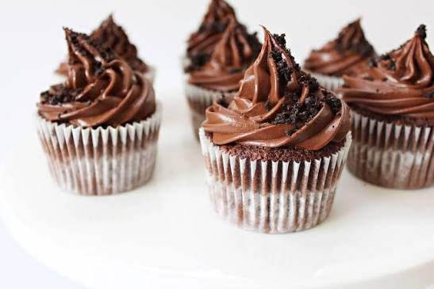

Hur bakar man chokladmuffins
Ingresienser
- 2 st ägg
- 2 dl strösocker
- 3 dl mjöl
- 1 dl kakao
- 1 tks backpulver
- 1 tsk vaniljsocker
- ½ tsk salt
- 150 g smält smö
- 2 ½ dl mjölk
Gör så här
- Sätt ugnen på 175°C.
- Vispa ägg och socker pösigt i en bunke.
- Blanda samman de torra ingredienserna.
- Vänd ner i äggsmenten tillsammans med smält smör och mjölk. Blanda ihop till en smet.
- Fyll muffindformarna till 3/4, använd gärna en muffinsplåt för att hjälpa muffinsen behålla formen.
- Bakka mitt i ungen 18-20 minuter.
Tips: Fyll endast muffinsformarna upp till 3/4 så att dina chokladmuffins har utrymme att växa utan att svämma över. Chokladmuffinsen är klara när du kan stoppa in en tändsticka eller gaffel utan att få blöt smet på.

Här är länken till denna recept.